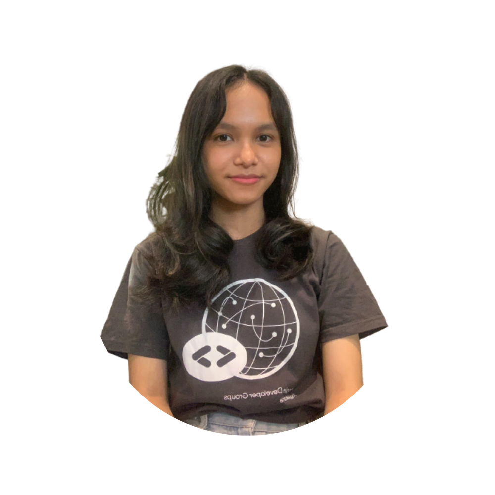

Hello, I'm Putu Raditha Chintia
Wardhani
LinkedIn
About Me
Seorang mahasiswa jurusan Informatika angkatan 2019 yang tertarik
dengan Front-End Web Developer. Saat ini sedang bekerja sebagai
Quality Control Engineer di Berijalan - Astra Credit Companies
(ACC). Selain bidang Front-End Web dan Quality Control/Quality
Assurance, saya juga tertarik di bidang Design dan Fotografi.
Bercita-cita ingin menjadi QC/QA di top company Indonesia dan
seorang Front-End Web Developer. Hobi traveling ke tempat-tempat
baru dan mencoba berbagai jenis makanan. Suka membuat video
traveling dan sharing terkait informasi traveling serta
rekomendasi tempat-tempat traveling.
Organization
Google Developer Groups
Merupakan Organizing Team di Google Developers
Group yang merupakan komunitas per provinsi yang dibawahi oleh
Google. Komunitas ini membantu orang-orang yang tertarik di
bidang IT untuk berkumpul, sharing dan belajar bersama.
Komunitas ini menyediakan study jam, seminar dan sharing session
terkait IT.
Google Developer Student Clubs
Merupakan Lead di Google Developer Student
Clubs UPN "Veteran" Yogyakarta. Komunitas ini membantu pelajar
dan mahasiswa dalam mengembangkan kemampuan di bidang IT melalui
study jam, sharing session dan seminar.
UKM Shorinji Kempo
Merupakan
Mantan Sekretaris, Mantan Ketua divisi Infokom dan
Anggota
dari UKM Shorinji Kempo UPN "Veteran" Yogyakarta. UKM Shorinji
Kempo merupakan organisasi di bidang olahraga dan kesenian yang
merupakan aliran beladiri dari Jepang bernama Shorinji Kempo.
Information Technology Clubs
Merupakan anggota divisi Android dari
Information Technology Clubs. Organisasi ini merupakan kelompok
studi mahasiswa di jurusan Informatika UPN "Veteran" Yogyakarta.
My Skill
Quality Assurance
Mempunyai pengalaman 2 tahun di bidang Quality Assurance/Quality
Control. Berawal sebagai Game Tester melalui studi independen
Kampus Merdeka di PT. Agate International hingga menjadi Quality
Control Engineer di Berijalan - Astra Credit Companies (ACC).
UI/UX Design
Pengalaman 2 tahun di bidang UI/UX Design. Mempunyai sertifikasi
di bidang UI/UX Design dan portofolio di bidang UI/UX Design
melalui mini-project dan pekerjaan freelance.
Photography
Mengembangkan skill fotografi sejak SMP. Mempunyai beberapa
portofolio bidang fotografi di bidang foto model dan landscape.
Berfokus pada fotografi model dan landscape.